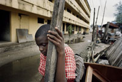

Other Human Rights Concerns in Nigeria
Freedom of Expression
There has been a welcome reduction in the detention of political prisoners and an increase in the space for freedom of expression. However, human rights defenders and journalists continue to face intimidation and harassment. In addition, media offices continue to be raided, and journalists threatened and beaten by police and security forces. Several journalists have been killed in suspicious circumstances in recent years.
In failing to prevent, investigate and punish perpetrators of these attacks, the Nigerian authorities are failing in their duty under international law and standards to exercise due diligence to protect the victims' right to life and security of person.
Violence Against Women
Despite Nigeria's ratification of the Convention on the Elimination of All Forms of Discrimination Against Women (CEDAW) without reservation 25 years ago in 1985, CEDAW has not yet been incorporated into national or state legislation and its provisions are not implemented at the state level. Violence against women remains pervasive, domestic violence, rape and other forms of sexual violence by both state officials and private individuals is widespread, and carried out with almost total impunity.
Children's Rights
Nigeria reflected the provisions of the Convention on the Rights of the Child in its Child's Rights Act (2003); however, the Act is yet to be enacted in 12 states of the federation. Violence against children, including child trafficking, child labor, sexual exploitation and harmful traditional practices continue to take place in Nigeria. In Akwa Ibom state, children believed to be witches continue to be subjected to torture and other cruel and degrading treatment by non state actors, sometimes resulting in death.

Click image to enlarge
©Michael Zumstein (Agence Vu') /AI - A school child in front of his home in Festac Town. Despite its poor state and lack of services, this neighbourhood is densely populated.
In 2005, the UN Committee on the Rights of the Child expressed their concern that existing legislation at federal, state and local levels, in particular the religious and customary laws, did not fully comply with the principles and provisions of the Convention on the Rights of the Child.
Nigeria has three young offender institutions; however, in most police stations and prisons, children are being held in cells together with adults. Amnesty International continues to receive reports that children and juveniles under the age of 18, some as young as 12 are tortured in police detention. Many juveniles under the age of 18 are sentenced to death every year in Nigeria.
Discrimination on the Basis of Gender Identity or Sexual Orientation
Human rights abuses that occur as a result of suspected same-sex sexual conduct or gender identity continues to take place in Nigeria. The Nigerian government has obligations under international human rights standards to respect, protect and fulfill the human rights of its population without distinction of any kind, including on the basis of sexual orientation or gender identity. However, Nigeria's Criminal Code penalizes consensual same-sex sexual conduct between adults with 14 years' imprisonment. Shari'a penal codes criminalize "sodomy", in some states with the death penalty. The use of laws to imprison individuals for consensual same-sex relations in private or on the basis of their gender identity or expression is a violation of Nigeria's international human rights obligations.
Homophobia and transphobia regularly results in violence against lesbian, gay, bisexual and transgender people and the authorities proved unable or unwilling to provide sufficient protection. In February 2009, at the 4th Session of the United Nations Universal Periodic Review (UPR), the Nigerian government stated that it was not aware of any 'Lesbian, Gay and Transgender group' in Nigeria.
Read more: Amnesty International, "50 Years of Independence: Making Human Rights a Reality"


{kind=link}